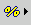
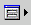

You can use a number of SQL commands, variable expressions, and helper buttons to retrieve information from a running event list, the current event, or the operating system environment. You can use these expressions when creating a tool, trigger, or SQL procedure, or in parameters passed to a transient event list.
The following table lists the SQL commands, variable expressions, and helper buttons.
| Command/variable expression | Button | Usage |
|---|---|---|
| select_command insert_command update_command delete_command use_command service_command |
 |
Click this
button to select an SQL command from the pop-up menu. Based on the
command that you select, complete the resulting window as follows:
|
| column_name @column_name |
 |
Click this
button to select a table column name to add to the command. The column
name is substituted for the corresponding event list row value when
the tool runs. When prefaced with the @ symbol, the column name is substituted with the corresponding event list row value during execution. This can be used in an SQL query or restriction filter, such as: RemoteNodeAlias = '@LocalNodeAlias' |
| conversion_name |  |
Click this button to select from a list of available conversions. |
| N/A |  |
Click this button to bring up a list of keywords that complete the entered SQL. |
| N/A |  |
Click this button to check the validity of the entered SQL syntax. |
| %internal_value |  |
Click
this button to select from a list of internal values known to the
current instance of the event list. For example, to run the transient
event list and specify the ObjectServer to connect to using the -server command-line
option, specify: -server "%server" The following internal values are
available for tools and as a parameter to the transient event list:
The following internal
value is available for procedures and triggers:
The following internal
value is available for triggers only:
The following internal
value is additionally available for signal triggers only:
|
| $prompt. prompt_name |
 |
Click this
button to select the name of the prompt to use when querying the user.
For example, to run the transient event list and prompt the user to
enter their password using the Password prompt, specify: -password
$prompt.Password You can use prompts in tools and as a parameter to the transient event list. |
| $selected_rows. column_name |
N/A | List of values of column_name for
all selected alerts. For example: update alerts.status set TaskList = 0 where Serial in ($selected_rows.serial) Do not use this syntax if you select the Execute for each selected row check box. Instead, select the check box if the change is different for each alert. |
| $(environment_ variable) |
N/A | Indicates an environment variable. For example,
when you run a transient event list, you can specify the filter file
by using the -elf command-line option, such as: -elf "$(NCHOME)/omnibus/ini/tool.elf To run the tool on Windows, enclose the environment variable, such as $(NCHOME), in double quotation marks. If there is a space in the path name, it will not be interpreted correctly. |
- When typing SQL commands within the Tivoli Netcool/OMNIbus SQL editor panels, you can type one or more characters and then press Ctrl+F1 to obtain a dialog box with a list of keywords that might match your entry. Select the required keyword and click OK to complete your entry. If only one keyword matches your typed characters, the keyword is automatically completed for you. If you press Ctrl+F1 after typing a database-related keyword, the dialog box provides a list of possible ObjectServer databases from which you can select. If you press Ctrl+F1 after typing a database name followed by a dot (for example: alerts.), you can press Ctrl+F1 again to view and select from a list of tables in the database.
- You can click the To Clipboard button to copy the command in a text format to the clipboard.